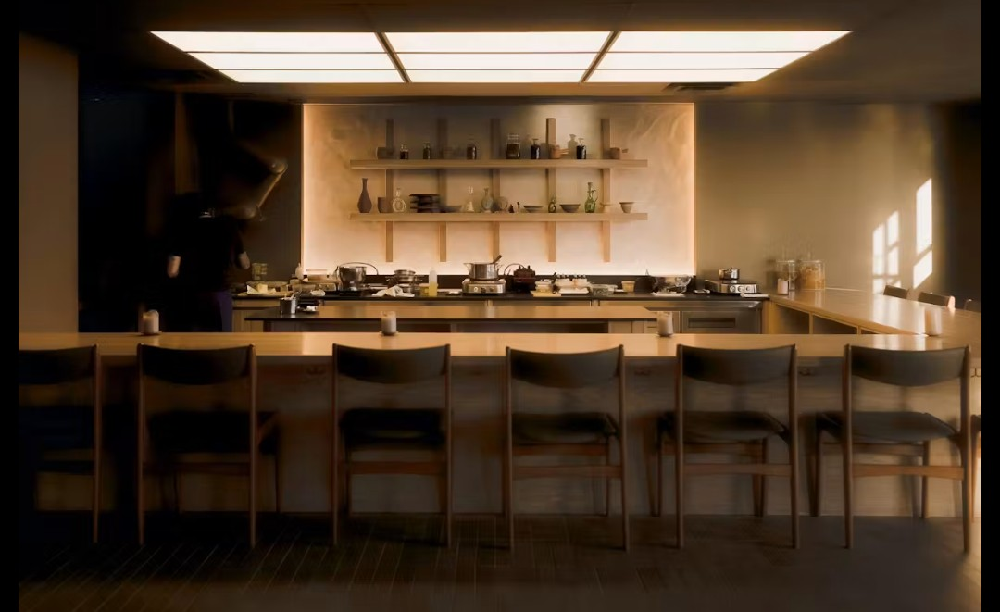
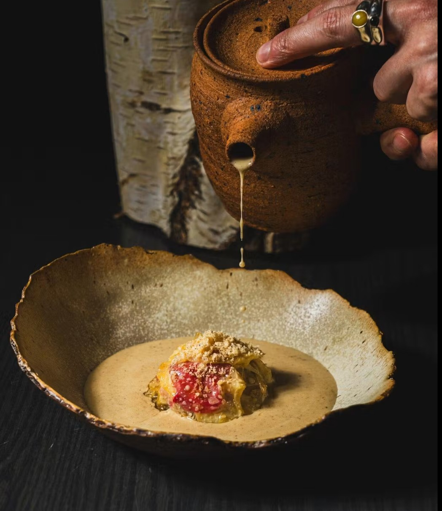

Awards Watch
September 26, 2026
Thirty restaurants across the country made the cut. Only one is in Ottawa. Chef Briana Kim's Antheia is a finalist for Air Canada's Best New Restaurants 2026 — the most closely watched new-restaurant ranking in Canada, and one more signal that the capital's top tier belongs in any serious national conversation.
Air Canada's annual ranking covers restaurants that opened between May 1, 2025 and April 30, 2026. This year's 30 finalists were chosen by an independent panel of culinary judges, working with the reservation platform DINR, and assessed on food, service and contribution to Canadian dining culture.
Ontario dominates the shortlist with 14 finalists, nine of them in Toronto. Outside Toronto, the province's representation comes from Collingwood, the Niagara region — and Ottawa, by way of Antheia.
Tucked upstairs on Somerset Street in Little Italy, Antheia is built around fermentation — not as a garnish or a technique, but as the organizing idea of the entire tasting menu. A chef's counter faces the open kitchen, and the shelves of jars and earthenware make the restaurant's working method visible from every seat. The non-alcoholic pairing of fermented juices has drawn as much attention as the food.
Kim arrived with credentials few new restaurants can match. The self-taught chef behind Alice won the 2023 Canadian Culinary Championship, and Air Canada's own writeup notes she was invited by René Redzepi to lead Noma's fermentation program in Copenhagen — and chose instead to build her own restaurant and research kitchen in Ottawa.

If Antheia makes the final ten, it will join a strong lineage of Ottawa restaurants named to Air Canada's Top 10 over the program's 25-year history. Past honourees from the city include:
That's a meaningful lineage, and those are only some of the names. Several of these restaurants remain fixtures at the very top of the city's dining scene years after their recognition — exactly the kind of staying power the Michelin Guide rewards.
Antheia already sits on our list of predicted One Star restaurants. A national shortlisting from an independent judging panel doesn't guarantee anything from Michelin's anonymous inspectors, but it does confirm what we've been arguing: this is a kitchen with a singular point of view, cooking at a level that holds up against the best new openings anywhere in the country.
Air Canada will reveal its 2026 Top 10 at an event in Toronto on November 16. A top-ten finish would add Antheia to that roll of Ottawa honourees — and hand the city one more piece of evidence that it's overdue for a Michelin Guide of its own.